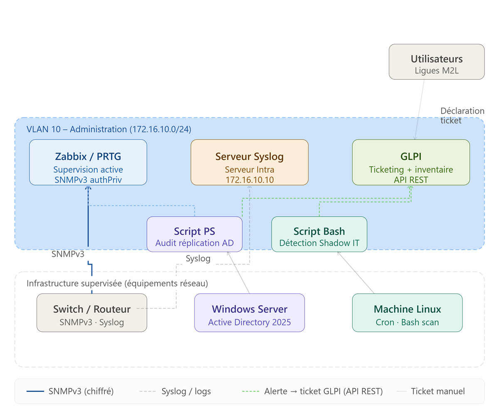

01Contexte et objectifs
À la M2L, les pannes étaient découvertes par les utilisateurs, et les incidents n'étaient pas tracés. Après la segmentation du réseau (VLANNE), le second volet de l'AP-2 visait à :
- surveiller l'état des équipements actifs (CPU, ports, bande passante) ;
- centraliser les journaux pour détecter pannes et tentatives d'intrusion ;
- traiter automatiquement les incidents de niveau 1 et les tracer dans un outil de ticketing.
02Architecture et environnement
Tous les outils sont hébergés dans le VLAN 10 Administration (172.16.10.0/24), protégé par les ACL de VLANNE.

| Brique | Rôle |
|---|---|
| Zabbix 6.4 | Interroge les équipements en SNMPv3 et génère des alertes en cas d'anomalie |
| Serveur Syslog | Serveur Intra 172.16.10.10 : reçoit les journaux de tous les équipements réseau |
| GLPI 10.0 | Portail unique de déclaration des incidents, inventaire, historique des interventions |
| Scripts | PowerShell (Windows Server 2025) et Bash/cron (Linux) pour l'automatisation de niveau 1 |
03Étapes de réalisation
- Supervision SNMPv3 et envoi Syslog
SNMPv2c transmet la communauté en clair. SNMPv3 en niveau
authPrivajoute l'authentification (SHA) et le chiffrement (AES-128). Zabbix utilise ces mêmes identifiants pour interroger les équipements.Cisco IOS · SNMPv3 + Syslog! Groupe SNMPv3 avec authentification + chiffrement Switch(config)# snmp-server group AdminGroup v3 priv ! Utilisateur superviseur (secrets remplacés pour la publication) Switch(config)# snmp-server user SuperAdmin AdminGroup v3 auth sha <MDP_AUTH> priv aes 128 <MDP_PRIV> ! Envoi des journaux vers le Serveur Intra Router(config)# logging 172.16.10.10 Router(config)# logging trap warnings - Audit de la réplication Active Directory (PowerShell), ma partie
Les problèmes d'authentification représentent une grande partie des tickets de niveau 1. Le script vérifie l'état de la réplication AD et écrit une alerte critique dans le journal Windows en cas d'échec, avant même qu'un utilisateur ne s'en plaigne.
PowerShell · audit_replication_ad.ps1# Récupération du statut de réplication AD sur le contrôleur local $ReplicationStatus = Get-ADReplicationPartnerMetadata -Target "$env:computername" # Filtrage des réplications en échec (code résultat différent de 0) $FailedReplications = $ReplicationStatus | Where-Object { $_.LastReplicationResult -ne 0 } if ($FailedReplications) { # Alerte visible dans l'Observateur d'événements, reprise par la supervision Write-EventLog -LogName "Application" -Source "M2L-Supervision" ` -EventId 1001 -EntryType Error ` -Message "Alerte : Echec de la replication Active Directory detecte." } else { Write-Output "Replication AD saine - aucune action requise." } - Détection du Shadow IT (Bash + cron)
Toutes les heures, un script balaie le VLAN des ligues et compare chaque hôte qui répond à la liste des équipements connus.
Bash · scan_ligues.sh (extrait)# Cron : 0 * * * * root /opt/scripts/scan_ligues.sh SUBNET="172.16.20" KNOWN_HOSTS="/opt/scripts/known_hosts.txt" LOG="/var/log/m2l_scan.log" for ip in {1..254}; do ping -c 1 -W 1 "$SUBNET.$ip" > /dev/null 2>&1 if [ $? -eq 0 ] && ! grep -q "$SUBNET.$ip" "$KNOWN_HOSTS"; then echo "[ALERTE] Equipement non autorise detecte : $SUBNET.$ip" | tee -a "$LOG" fi done - Intégration GLPI, ma partie
GLPI ferme la boucle entre la supervision technique et les utilisateurs :
- Inventaire : centralisation des actifs (PC, switchs, routeur), liés aux tickets d'incident ;
- Profils : administrateur, technicien, et post-only pour les membres des ligues ;
- Entités : organisation hiérarchique par ligue sportive ;
- Sécurité : désactivation des comptes par défaut et changement des mots de passe ;
- Automatisation : les scripts PowerShell et Bash peuvent appeler l'API REST de GLPI pour ouvrir un ticket dès qu'une anomalie est détectée.
04Difficultés et solutions
SNMPv2c, souvent configuré par défaut, expose la communauté en clair sur le réseau : n'importe quel poste peut la capturer.
Passage à SNMPv3 authPriv : SHA pour l'authentification, AES-128 pour la confidentialité.
Un incident AD n'était visible qu'au moment où un utilisateur ne pouvait plus se connecter.
Un audit PowerShell planifié écrit un événement d'erreur (ID 1001), repris par la supervision et transformable en ticket.
05Résultat
Associé à VLANNE, SUPERVIZ fournit une infrastructure segmentée, surveillée et réactive. Le cycle de vie de l'incident est automatisé : détection (scan ou supervision), authentification à l'API GLPI, création du ticket, puis notification du technicien.
Perspectives présentées à la soutenance : VPN client-to-site sécurisé, IDS/IPS (Suricata), supervision cloud hybride.
06Compétences du référentiel mobilisées
- B1.1Gérer le patrimoine informatiqueVérifier les conditions de la continuité d'un service · Mettre en place les niveaux d'habilitation (profils GLPI)
- B1.2Répondre aux incidents et aux demandesCollecter, suivre et orienter des demandes · Traiter des demandes sur les services réseau et système
- B1.4Travailler en mode projetProjet en équipe de 4, livrables : devis, dossier technique, soutenance
- B1.5Mettre à disposition un service informatiqueDéployer un service de supervision et de ticketing